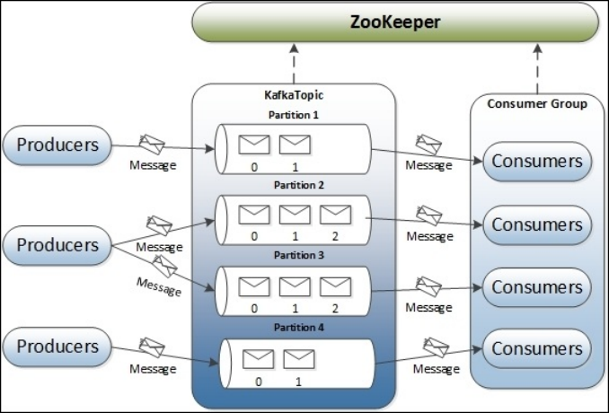
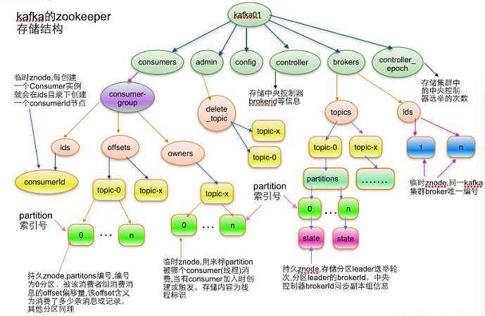
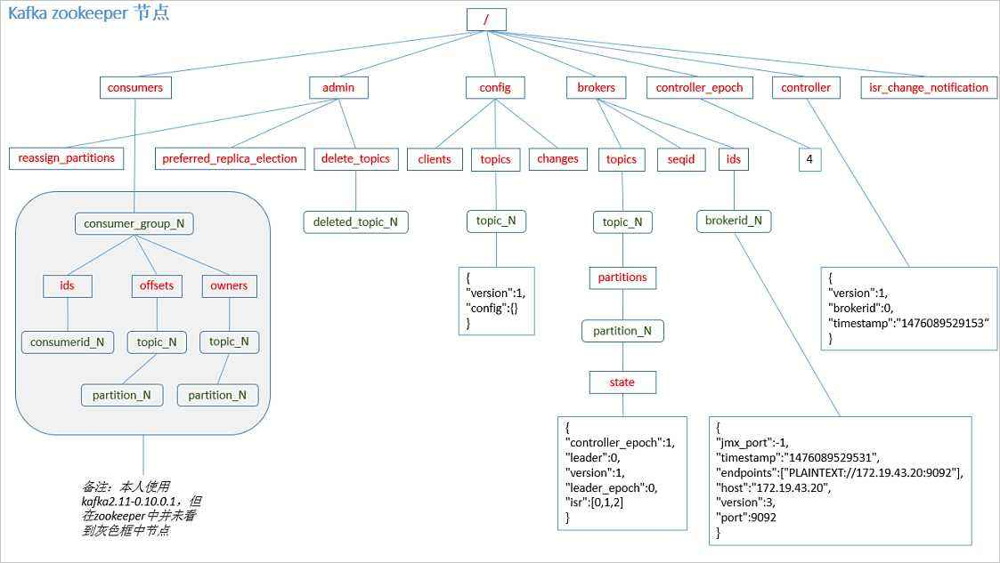
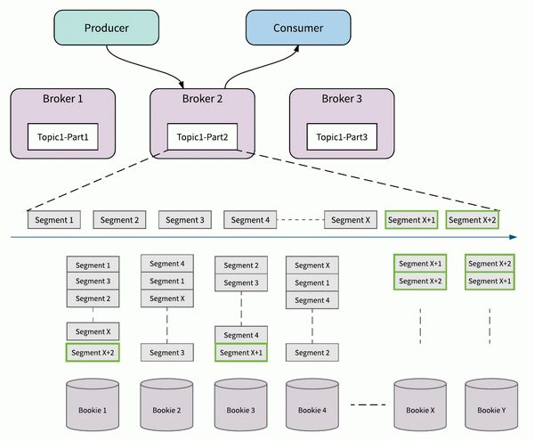
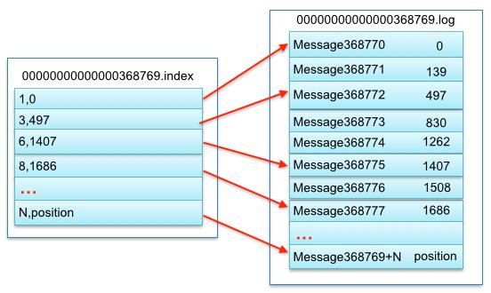

kafka
我最初使用kafka时以为kafka就是一个消息队列,后来随着深入使用才发现kafka其实不是纯粹的消息队列,而是一种分布式消息系统,基于scala开发
面向对象的程序 = 对象 + 消息传递
消息系统在我们业务中的重要性由此可见, 消息系统可以作为系统与系统进行交互,或者对业务进行解耦的一个利器
我们通常会把许多实时性要求不那么高的任务处理通过消息系统进行解耦,以平衡数据处理的性能和功能
例如: 用户下了一个订单,我们需要马上告诉用户下单成功, 但是之后的物流发货, 订单入账和商品信息更新等消息都可以通过一个消息系统进行拆分,这样不仅不会影响用户体验,也可以对之后触发的多个属于不同系统的业务进行并行处理,提升系统处理的性能
基本概述
kafka作为一个消息平台,其中有一些基础概念
1 | broker(instance) 承载服务的实例 |
broker
broker就相当于我们的kafka实例, 每个集群由多个broker组成, 每个broker具有完整的存储消息的功能, 多个broker可以组成broker集群, 但是这些实例不一定要分布在不同的机器上
broker是链接producer和consumer的中间桥梁, producer将消息发送给broker, broker对消息进行存储, 等待consumer消费和使用消息
topic
topic就相当于其他消息队列中的queue,我们发送消息需要执行topic,读取消息也需要指定topic,同一个topic可以有多个生产者和多个消费者
topic是一个逻辑上的概念, 每个topic由一到过个partition组成, 每个partition保存topic内的一部分消息
topic内的消息无法保证有序, 除非只有一个partition
partition
partition相当于是topic内部的一个分片
假如说我们有个topic其中有5个patition, 一个消息在每个topic中只会存储在一个patition中, 整个topic的消息等于该topic下所有partition的总和
每个partition只能有一个消费者, topic下的总消费者数量也受限于partition, 比如你topic有10个分片, 如果使用12个消费者就会有两个消费者永远获取不到数据
每个partition是一个文件集合, 单个partition里面的数据因为这个关系可以保持有序
consumer
每个消费者可以消费一个topic的一个partition, 可以同时消费多个topic
consumer数量如果超过一个topic的分片数量, 会造成某些consumer永远消费不到数据
消费者消费国数据需要提交offset告诉broker自己已经消费过某条数据
当topic新增一个consumer的时候会触发其他消费此topic的consumer的Rebalance, 重新在consumer之间进行分区分配
consumer group
消费者组也是一个逻辑上的概念, 每个消费者组内的消费者只能消费同一个topic内的某一条消息一次, 除非进行手动offset调整重新消费
如果某个topic中的数据希望同时给多个业务方使用, 每个业务放应该使用一个单独的consumer group
producer
每个生产者可以为多个topic生产数据, producer只负责的将数据发送给broker
kafka的主要应用
消息队列
kafka通常被用作消息队列, 因为他可以保证消息的有序
日志/消息存储
kafka由于基于文件存储,所以很适合用来存储日志信息,通知消息等有序且数据巨大的信息
数据总线
kafka还适合在不同的存储系统和业务之间做数据总线, 这样可以方便的把一份数据传递给多方公用
流处理
kafka还可以用来进行流数据处理
kafka的特性
1. 增加了partition层, 高度解耦, 支持分布式, 支持副本, 扩展方便
2. 基于文件存储消息, 采用文件指针的读方式, 速度快, 可重复读
3. 保证多消费者情况下消息的有序性
4. 在producer, broker, consumer三者做了大量性能优化,例如:`cache buff`和`sendfile()`等
kafka的大部分特性都得益于partition的设计,由于采用了文件集合来存储每一个partition,使得kafka在性能和有序性方面获得了巨大的优势
kafka作为消息队列的缺点
1. 只有topic一个逻辑隔离级别
2. 高并发依赖于partition, 扩展不是特别的方便
3. 没有优先级机制
4. 数据级别的数据同步不成熟
5. 功能和数据存储系统没有隔离开
同时也由于kafka的部分设计不可避免的有一些缺点
由于partition的限制,应对高并发场景,如果需要加快一个topic的处理速度只能通过增加消费者的方式,这个增加过程又不像其他内存式的消息队列来的方便
kafka也没有消息优先级的机制
kafka的竞争对手Pulsar在后两点比kafka要优秀
kafka大概工作流程示意图

kafka中的一个完整的消息流程如上图所示
Producer将消息发给broker中的topic,存储到topic下的某一个partition
Consumer从partition中消费数据,将该消费者在该topic中的数据偏移标记为最新
kafka为什么这么快
- 吞吐量和延迟
吞吐量和延迟是一个kafka的平衡选择
吞吐量大, 延迟就高, 延迟高, 吞吐量就小,这个需要自己做抉择, kafka一定程度上选择了用牺牲延迟换吞吐量
- 零拷贝
kafka的broker发送数据时采用零拷贝技术, 减少了一次内部的从用户态到内核态的状态切换过程, 将文件直接通过内存地址发送给网卡
- 基于文件的追加方式
kafka采用追加文件记录的形式来处理数据, 这种方式要比随机读写快上很多
- buff发送
对发送的文件进行了了缓冲区处理, 缓冲区满了以后或者到了一定时间才会发送数据
相当于对发送信息做了批处理
kafka和ZooKeeper
kafka 使用zk存储一些关键配置信息
如: 消费者在topic中的消费位置, 某个topic的消息总量, 每个partition的消费数据等信息,消费者消费的记录offset等都存储于zk
许多的kafka监控应用也都是通过读取zk中的kafka数据来进行监控的
ps: kafka新版本中已经允许客户端提交offset到kafka的topic中


kafka存储
kafka的数据存储大致分为三层, broker, partition, segment
具体如下图:

segment内的存储细节

kafka遇到的问题
kafka的topic不消费
产生原因
topic中的消息容量是有限制的,假如短时间内某topic中进入了大量的消息
消费者来不及消费可能导致消费者的消费offset小于当前topic的最小消息便宜
举例:
假如我们topic最大可以存储200万消息,消费者每分钟消费30万的消息
现在有个入消息的接口每分钟入100万的消息,那topic, consumer就会产生如下问题
1 | { |
也就是说消费者的消费值在内存中的topic中找不到了.因为消息入得太快,消费者跟不上,当前消费消息,被”顶”出去了
解决方案:
- 可以手动设置消费者的消费位置,将其置为 当前topic中可以找到的消息偏移位置
- 可以重新设置消费方式,这种方式也是变相将该消费者在该topic的消费位置重置
kafka的topic不能删除
原因: 因为要删除一个topic必须符合两个条件
- 无消费者消费
- 文件中无消息记录,普通的删除只能删除文件中的消息记录,无法删除消费者得消费信息
方案: 将该topic的所有消费者消费偏移置为0 ,然后执行删除
kafka的分片数据分布不均匀
原因: kafka早期的算法会根据key的hash值来对消息进行分配
如果没有key可能会被分配至随机的一个固定的partition中
这样会导致topic中的消息分布不均匀,
方案: 1. 可以更改分配算法 2. 使用时间戳作为key的结尾
kafka的消费者分组的使用
描述: 由于每个消费者分组中的topic只能被消费一次
kafka可以通过消费者分组来对某一topic中的数据进行重复消费
我们可以通过给不同部门设置消费者分组来实现类似订阅的机制
举例: 我们有一个订单消息队列, topic为 order-topic
我们可以通过给 订单部门和 物流部门 分配不同的消费者分组
来对同一个topic中的消息进行消费
我们kafka的使用
kafka在我们组的项目中我知道的主要用于以下项目
- 产品池(待更新的产品的存储)
- 部分表数据同步(价格实时同步,可售状态同步等)
- 实时更新
Kafka的其他特性
kafka事务
kafka现在已经支持事务, 这个是kafka一致性保证的重大进步
kafka的事务目前还有一定的限制, 实现方式是使用 事务ID和客户端id做幂等处理
kafka事务流程
生产者发起事务请求
发送消息
服务器接受数据,进行追加写入
生产者结束事务
如果客户端没有结束事务, kafka虽然将数据写入到了broker,但是不会让其他消费者客户端读到这部分数据
这部分数据在kafka上会被标记为abort掉的数据
kafka多版本混布
kafka现在支持多个kafka版本混合部署, 可以同时使用1.0 和2.0 版本组建一个kafka集群
高级应用(kafka streams):kafka的流处理
流处理
什么是流?
一个无限持续的数据集
流处理框架 spark,storm等
流处理更像业务逻辑的一部分,而不是业务的分拆,是一个独立的微服务,而不是MapReduce任务
- TopicA + TpoicB = stream
常用方法
filter /map /join /aggregate
以上是四种常用的流数据处理的方法
其中 map/filter 属于对单个数据进行的无状态操作
join/aggregate 属于数据组合方面的, 有一定的状态要求
Kstream和Ktable
- KStream
一个纯粹的流就是所有的更新都被解释成INSERT语句(因为没有记录会替换已有的记录)的表。
在一个流中(KStream)，每个key-value是一个独立的信息片断，比如，用户购买流是：alice->黄油，bob->面包，alice->奶酪面包，我们知道alice既买了黄油，又买了奶酪面包。
ps: 表中每条记录的变动就是一个流
- KTable(changelog流)
KTable 一张表就是一个所有的改变都被解释成UPDATE的流(因为所有使用同样的key的已存在的行都会被覆盖)。
对于一个表table( KTable)，是代表一个变化日志，如果表包含两对同样key的key-value值，后者会覆盖前面的记录，因为key值一样的，比如用户地址表：alice -> 纽约, bob -> 旧金山, alice -> 芝加哥，意味着Alice从纽约迁移到芝加哥，而不是同时居住在两个地方。
ps: 对某一时刻的流数据进行切面,按时间对数据进行覆盖,那个切面数据就是表
这两个概念之间有一个二元性，一个流能被看成表，而一个表也可以看成流。
KTable 还提供了通过key查找数据值的功能，该查找功能可以用在Join等功能上。